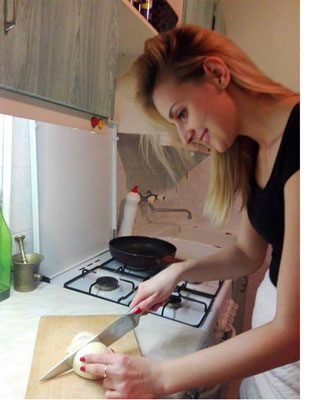

 Nasze gotowanie
to mała strona opiewająca nasze wyczyny w kuchni. W naszym domu gotują wszyscy, Każdy tyle ile potrafi. Jednak mistrzem tam panującym jestem ja. Natalia. Może dlatego, że reszcie się nie chce.
Nasze posiłki są dość zróżnicowane. Choć w tygodniu brak nam czasu na tworznie wymyślnych potraw, to w sobotę i niedzielę możemy delikatnie poeksperymentować.
Natalia